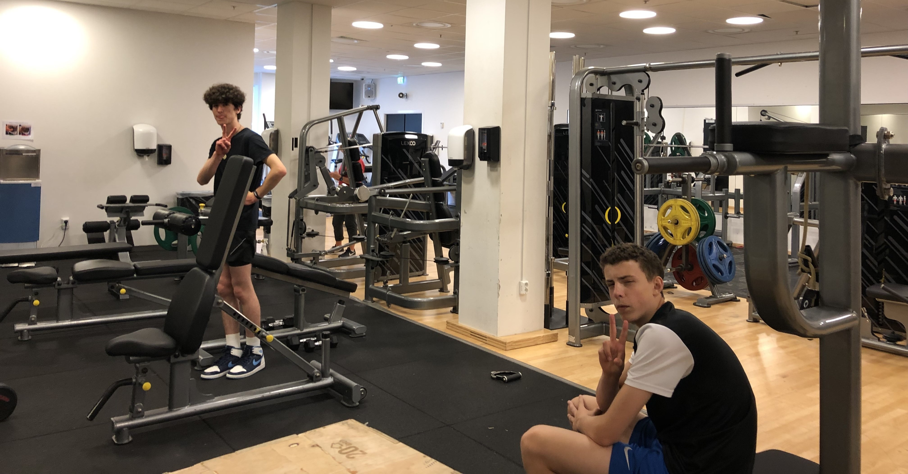

Studiespesialisering

Litt om linjen
Hvis du velger denne linjen så kommer du til å ytdype deg innen realfag, språk, samfunnsfag og økonomi.
Du lærer avhengig av dine fagvalg
-Mattematikk og andre realfag
-Ledelse og økonomi
-Historie, politikk og psykologi
-Språk
-Andre teoretiske fag
Hvorfor velge linjen?
Hvis du har planer om å studere videre eller hvis du ikke vet hva du vill søke så er denne linjen rett for deg.
Ved å velge denne linjen og fulføre det tre-årige utdanningsprogrammet så får du rett til å søke på universitet fordi du får generel studiekompetanse.
Ved å velge denne linjen kan du søke på høyskole og universitet i enten Norge eller i utlandet.
Egenskaper
-Interessert i å arbeide med teoretiske fag
-Samarbeidsvillig, strukturert og selvdisiplinert
-Interessert i å skrive eller regne
-Interessert i kultur- og samfunnsforhold